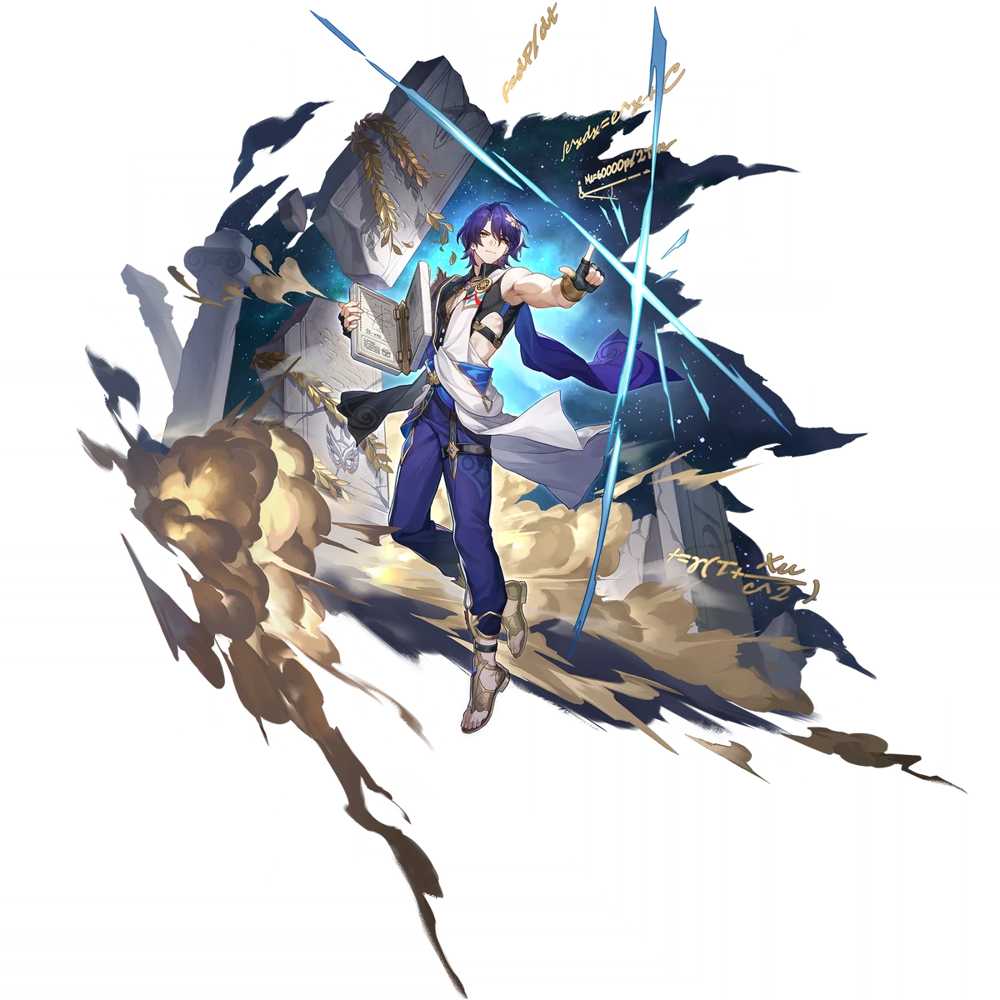

Descripcion del personaje
Dr. Ratio es un personaje de cinco estrellas en Honkai Star Rail de tipo Imaginario que pertenece a la Vía de la Cacería. Posee unas habilidades que generan bastante daño single target, pero su verdadera fuente de poder reside en sus Ataques Adicionales, los cuales solo podrá ejecutar bajo ciertas circunstancias.
Algo que llama mucho la atención sobre el Dr. Ratio es que tiene múltiples mecánicas que le permiten mejorar su daño o su probabilidad de generar Ataques Adicionales al atacar a un enemigo que se encuentra bajo múltiples estados negativos, por lo tanto, será obligatorio jugar a este personaje junto con un Nihilidad para poder sacar su verdadero potencial.
Introduccion al personaje
Es uno de los miebros del circulo de genios, un grupo de legendarios científicos e ingenieros cuyas investigaciones y avances tecnológicos han tenido un impacto significativo en el universo del juego.
Dr. Ratio es conocido por ser un genio de la biotecnología, con una inclinación particular por la manipulación genética y la creación de formas de vida artificiales. Su enfoque en la ciencia se centra en maximizar el potencial biológico a través de la tecnología, lo que lo convierte en una figura clave en el desarrollo de innovaciones científicas en ese campo. Es un personaje complejo, cuyo trabajo en la frontera de la ética científica genera debates y tensiones dentro del mundo del juego.
El Dr. Ratio representa el tipo de científico que empuja los límites de lo aceptable en nombre del progreso.
Calidad del personaje

VIA del personaje
Caceria

Estadisticas del personaje
- PV: 1048
- ATQ: 776
- DEF: 461
- VEL: 103
- Povocacion: 75